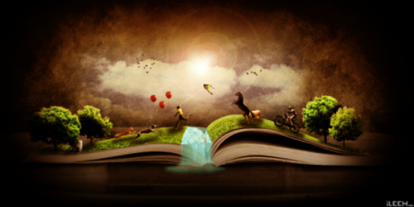

-Bibliophilia or bibliophilism is the love of books and reading,
and a bibliophile or bookworm is an individual who loves and frequently reads books. -Reading is the process of looking at a series of written symbols and getting meaning from them. -A library is a building or room containing collections of books, periodicals, and sometimes films and recorded music for use or borrowing by the public or the members of an institution.

Why Reading?
A single good-sized book will provide you with many hours of entertainment, it will make you think about aspects of the world around you and reconsider those aspects a little.Even better, that single book can be acquired for practically nothing.
The hobby of reading gets one to disconnect from everything around and dive into a whole different world that can be so far from reality and logic sometimes. It is also a great way to expand one’s mind and enrich one’s language and vocabulary.
Some benefits of reading:
improves brain connectivity,
increases your vocabulary and comprehension,
empowers you to empathize with other people,
aids in sleep readiness,
reduces stress,
lowers blood pressure and heart rate,
fights depression symptoms,
prevents cognitive decline as you age and so many more.
Not to mention that you can learn so much from books and can tip your toes in so many different sectors, from life lessons, business strategies, historical events, psychological cases to cooking and chess.
Present above is a testimony on the importance of reading and its benefits given by of one of the richest people in the world and one of the most successful,Elon Musk CEO of many successful multibillion dollar companies like Tesla and others.Where he defied the stereotype and showed that reading not only is a hobby, but it also has tangible benefits, some of which have impacted his business life and strategies.
The library at Trinity College in Dublin, one of the world's most famous.